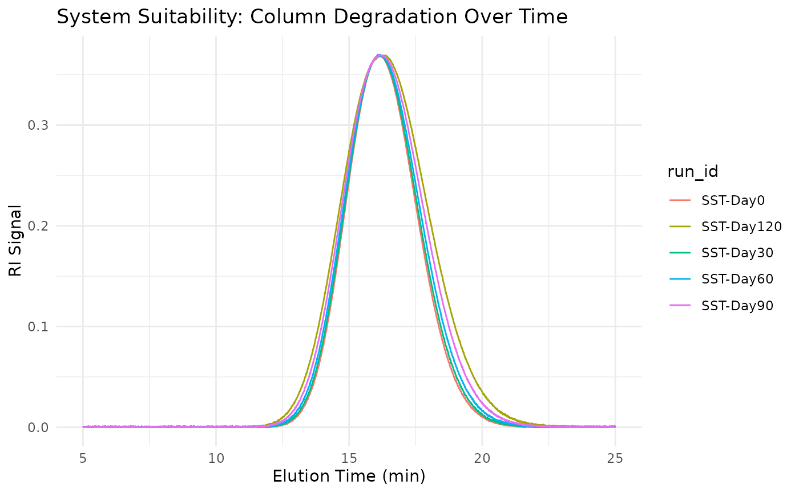

A synthetic dataset containing SEC system suitability test (SST) runs showing column degradation over time, useful for QC testing and demonstrating column performance metrics.
Format
A tibble with 10,005 rows and 7 columns:
- run_id
Character. Run identifier (e.g., "SST-Day0")
- elution_time
Numeric. Elution time in minutes
- ri_signal
Numeric. Refractive index detector signal
- column_age_days
Numeric. Column age in days
- expected_plate_count
Numeric. Expected theoretical plate count
- expected_asymmetry
Numeric. Expected peak asymmetry factor
- expected_resolution
Numeric. Expected resolution between peaks
Details
The dataset simulates SST runs using two polystyrene standards (50K and 100K MW) measured at different column ages (0, 30, 60, 90, 120 days).
Column Degradation Effects: As the column ages, typical degradation patterns include:
Decreased plate count (broader peaks)
Increased asymmetry (more tailing)
Decreased resolution between peaks
QC Metrics Available: Use the QC functions to calculate and verify:
measure_sec_plate_count- Theoretical platesmeasure_sec_asymmetry- Peak asymmetrymeasure_sec_resolution- Peak resolutionmeasure_sec_suitability- Combined SST check
Typical Workflow:
Load daily SST run
Calculate QC metrics
Compare to specifications
Track trends over time
See also
Other sec-data:
sec_branched,
sec_calibration_standards,
sec_copolymer,
sec_pmma_standards,
sec_protein,
sec_ps_standards,
sec_triple_detect
Examples
data(sec_system_suitability)
# View column age progression
unique(sec_system_suitability[,
c("run_id", "column_age_days", "expected_plate_count")])
#> # A tibble: 5 × 3
#> run_id column_age_days expected_plate_count
#> <chr> <dbl> <dbl>
#> 1 SST-Day0 0 45000
#> 2 SST-Day30 30 43000
#> 3 SST-Day60 60 40000
#> 4 SST-Day90 90 36000
#> 5 SST-Day120 120 32000
# Plot degradation over time
if (requireNamespace("ggplot2", quietly = TRUE)) {
library(ggplot2)
ggplot(sec_system_suitability, aes(elution_time, ri_signal, color = run_id)) +
geom_line() +
labs(
x = "Elution Time (min)",
y = "RI Signal",
title = "System Suitability: Column Degradation Over Time"
) +
theme_minimal()
}
